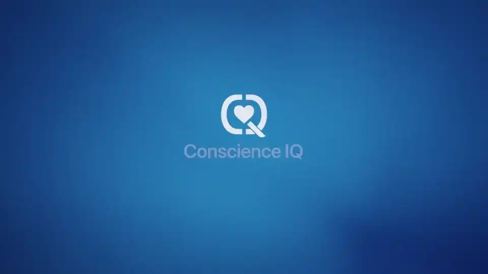

Use Case 01
GameFace
A simple check-in for stress, readiness, and practical next steps.
- Plain-language product story
- Videos and real-world context
- Built for first-time visitors
Conscience IQ Use Cases
A simple way to understand stress, readiness, and the next best step.
GameFace is the main product story. It is written for a first-time visitor who does not know the background, the acronyms, or the background. The other use cases remain available as separate pages.
Readiness, recovery, pressure
Trust, cohesion, fragmentation
Strain, burnout, response capacity
A short, natural conversation helps reveal how someone is doing.
The result is easy to understand without extra explanation.
GameFace points people toward rest, reset, conversation, or support.
Select A Story
GameFace is the priority. Healthcare and Civic Trust stay as separate use-case pages so visitors can move directly to the story that fits them.
Use Case 01
A simple check-in for stress, readiness, and practical next steps.

Use Case 02
Civic listening, trust, fragmentation risk, and better public decision support.

Use Case 03
Physician strain, readiness, burnout visibility, and trusted assessment records.
Built For Action
The goal is simple: help a person understand what is happening early enough to do something useful about it.